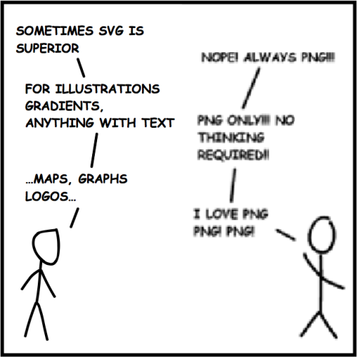

3. Why use GSAP?
Handles transform inconsistencies across browsers.
Animate CSS
See the Pen Greensock CSS Animation by Gianluca Truda (@gianlucatruda) on CodePen.
Simplest tools for 90% of functionality.
Incredibly powerful with SVGs.
See the Pen MorphSVGPlugin from GreenSock by GreenSock (@GreenSock) on CodePen.
codepen.io/GreenSock/pen/WQjRXE
This uses a premium MorphSVG Plugin
Why SVGs are better than images.
25.media.tumblr.com/tumblr_m8hkpfyY471qzuhlso1_500.png

i.stack.imgur.com/UydAT.png
Easeing.
See the Pen GSAP101 : Easing by Gianluca Truda (@gianlucatruda) on CodePen.
Staggering and arrays.
See the Pen GSAP101 : Arrays and Stagger by Gianluca Truda (@gianlucatruda) on CodePen.
Timelining.
See the Pen Understanding GSAP's Timeline by Sarah Drasner (@sdras) on CodePen.
codepen.io/sdras/pen/ByEWON/
See the Pen GSAP101 : Timelines by Gianluca Truda (@gianlucatruda) on CodePen.